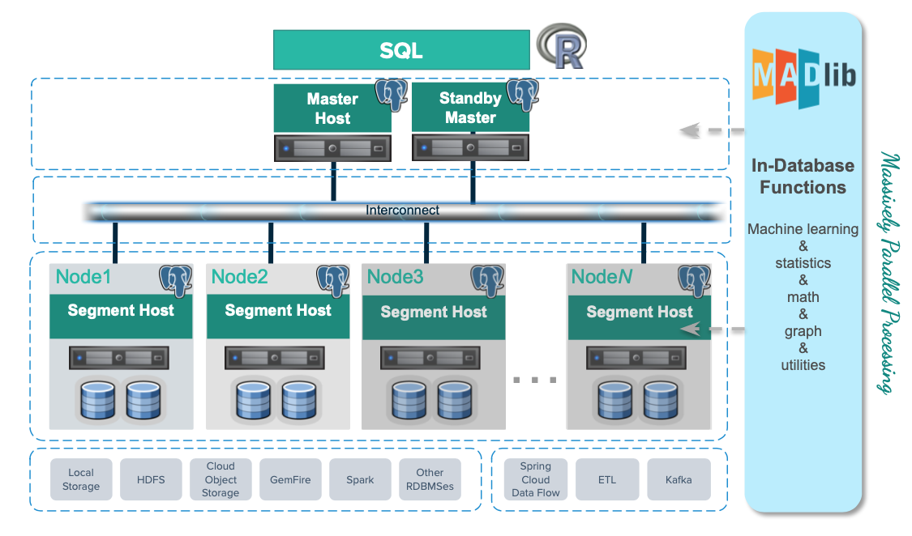

Machine Learning and Deep Learning using MADlib
Apache MADlib is an open-source library for scalable in-database analytics. The SynxDB MADlib extension provides the ability to run machine learning and deep learning workloads in a SynxDB.
You can install it as an extension in a SynxDB system you can run data-parallel implementations of mathematical, statistical, graph, machine learning, and deep learning methods on structured and unstructured data. For SynxDB and MADlib version compatibility, refer to MADlib FAQ.
MADlib’s suite of SQL-based algorithms run at scale within a single SynxDB engine without needing to transfer data between the database and other tools.
MADlib is part of the database fabric with no changes to the SynxDB architecture. This makes it easy for database administrators to deploy and manage since it is not a separate daemon or separate software running outside the database.

Machine Learning
Apache MADlib consists of methods to support the full spectrum of data science activities. This includes data transformation and feature engineering, using methods in descriptive and inferential statistics, pivoting, sessionization and encoding categorical variables. There is also a comprehensive library of graph, supervised learning and unsupervised learning methods.
In the area of model selection, MADlib supports cross validation and the most common prediction metrics for evaluating the quality of predictions of a model. Please refer to the MADlib user guide for more information on these methods.
Deep Learning
Starting in Apache MADlib release 1.16, SynxDB supports using Keras and TensorFlow for deep learning. You can review the supported libraries and configuration instructions on the Apache MADlib pages as well as user documentation for Keras API using the Tensorflow backend. Note that it is not supported with RHEL 6.
MADlib supports Keras with a TensorFlow backend, with or without Graphics Processing Units (GPUs). GPUs can significantly accelerate the training of deep neural networks so they are typically used for enterprise level workloads. For further GPU information, visit the MADlib wiki, https://cwiki.apache.org/confluence/display/MADLIB/Deep+Learning.
PivotalR
MADlib can be used with PivotalR, an R client package that enables users to interact with data resident in the SynxDB. PivotalR can be considered as a wrapper around MADlib that translates R code into SQL to run on MPP databases and is designed for users familiar with R but with data sets that are too large for R.
The R language is an open-source language that is used for statistical computing. PivotalR is an R package that enables users to interact with data resident in SynxDB using the R client. Using PivotalR requires that MADlib is installed on the SynxDB.
PivotalR allows R users to leverage the scalability and performance of in-database analytics without leaving the R command line. The computational work is run in-database, while the end user benefits from the familiar R interface. Compared with respective native R functions, there is an increase in scalability and a decrease in running time. Furthermore, data movement, which can take hours for very large data sets, is eliminated with PivotalR.
Key features of the PivotalR package:
- Explore and manipulate data in the database with R syntax. SQL translation is performed by PivotalR.
- Use the familiar R syntax for predictive analytics algorithms, for example linear and logistic regression. PivotalR accesses the MADlib in-database analytics function calls.
- Comprehensive documentation package with examples in standard R format accessible from an R client.
- The PivotalR package also supports access to the MADlib functionality.
For information about PivotalR, including supported MADlib functionality, see https://cwiki.apache.org/confluence/display/MADLIB/PivotalR.
The archived packages for PivotalR can be found at https://cran.r-project.org/src/contrib/Archive/PivotalR/.
Prerequisites
Important SynxDB supports MADlib version 2.x for SynxDB 2 on RHEL8 platforms only. Upgrading from MADlib version 1.x to version 2.x is not supported.
MADlib requires the m4 macro processor version 1.4.13 or later. Ensure that you have access to, or superuser permissions to install, this package on each SynxDB host.
MADlib 2.x requires Python 3. If you are installing version 2.x, you must also set up the Python 3 environment by registering the python3u extension in all databases that will use MADlib:
CREATE EXTENSION python3u;
You must register the extension before you install MADlib 2.x.
Installing MADlib
To install MADlib on SynxDB, you first install a compatible SynxDB MADlib package and then install the MADlib function libraries on all databases that will use MADlib.
If you have GPUs installed on some or across all hosts in the cluster, then the segments residing on those hosts can benefit from GPU acceleration. GPUs and deep learning libraries such as Keras, TensorFlow, cudNN, and CUDA are managed separately from MADlib. For more information see the MADlib wiki instructions for deep learning and the MADlib user documentation for deep learning .
Installing the SynxDB MADlib Package
Before you install the MADlib package, make sure that your SynxDB is running, you have sourced synxdb_path.sh, and that the $MASTER_DATA_DIRECTORY and $GPHOME environment variables are set.
-
Download the MADlib extension package.
-
Copy the MADlib package to the SynxDB master host.
-
Unpack the MADlib distribution package. For example:
To unpack version 1.21:
$ tar xzvf madlib-1.21.0+1-gp6-rhel7-x86_64.tar.gzTo unpack version 2.1.0:
$ tar xzvf madlib-2.1.0-gp6-rhel8-x86_64.tar.gz -
Install the software package by running the
gppkgcommand. For example:To install version 1.21:
$ gppkg -i ./madlib-1.21.0+1-gp6-rhel7-x86_64/madlib-1.21.0+1-gp6-rhel7-x86_64.gppkgTo install version 2.1.0:
$ gppkg -i ./madlib-2.1.0-gp6-rhel8-x86_64/madlib-2.1.0-gp6-rhel8-x86_64.gppkg
Adding MADlib Functions to a Database
After installing the MADlib package, run the madpack command to add MADlib functions to SynxDB. madpack is in $GPHOME/madlib/bin.
$ madpack [-s <schema_name>] -p greenplum -c <user>@<host>:<port>/<database> install
For example, this command creates MADlib functions in the SynxDB testdb running on server mdw on port 5432. The madpack command logs in as the user gpadmin and prompts for password. The target schema is madlib.
$ madpack -s madlib -p greenplum -c gpadmin@mdw:5432/testdb install
After installing the functions, The SynxDB gpadmin superuser role should grant all privileges on the target schema (in the example madlib) to users who will be accessing MADlib functions. Users without access to the functions will get the error ERROR: permission denied for schema MADlib.
The madpack install-check option runs test using Madlib modules to check the MADlib installation:
$ madpack -s madlib -p greenplum -c gpadmin@mdw:5432/testdb install-check
Note The command
madpack -hdisplays information for the utility.
Upgrading MADlib
Important SynxDB does not support directly upgrading from MADlib 1.x to version 2.x. You must back up your MADlib models, uninstall version 1.x, install version 2.x, and reload the models.
You upgrade an installed MADlib version 1.x or 2.x package with the SynxDB gppkg utility and the MADlib madpack command.
For information about the upgrade paths that MADlib supports, see the MADlib support and upgrade matrix in the MADlib FAQ page.
Upgrading a MADlib 1.x Package
Important SynxDB does not support upgrading from MADlib version 1.x to version 2.x. Use this procedure to upgrade from an older MADlib version 1.x release to a newer version 1.x release.
To upgrade MADlib, run the gppkg utility with the -u option. This command upgrades an installed MADlib 1.x package to MADlib 1.21.0+1.
$ gppkg -u madlib-1.21.0+1-gp6-rhel7-x86_64.gppkg
Upgrading a MADlib 2.x Package
Important SynxDB does not support upgrading from MADlib version 1.x to version 2.x. Use this procedure to upgrade from an older MADlib version 2.x release to a newer version 2.x release.
To upgrade MADlib, run the gppkg utility with the -u option. This command upgrades an installed MADlib 2.0.x package to MADlib 2.1.0:
$ gppkg -u madlib-2.1.0-gp6-rhel8-x86_64.gppkg
Upgrading MADlib Functions
After you upgrade the MADlib package from one minor version to another, run madpack upgrade to upgrade the MADlib functions in a database schema.
Note Use
madpack upgradeonly if you upgraded a minor MADlib package version, for example from 1.19.0 to 1.21.0, or from 2.0.0 to 2.1.0. You do not need to update the functions within a patch version upgrade, for example from 1.16+1 to 1.16+3.
This example command upgrades the MADlib functions in the schema madlib of the SynxDB test.
madpack -s madlib -p greenplum -c gpadmin@mdw:5432/testdb upgrade
Uninstalling MADlib
When you remove MADlib support from a database, routines that you created in the database that use MADlib functionality will no longer work.
Remove MADlib objects from the database
Use the madpack uninstall command to remove MADlib objects from a SynxDB. For example, this command removes MADlib objects from the database testdb.
$ madpack -s madlib -p greenplum -c gpadmin@mdw:5432/testdb uninstall
Uninstall the SynxDB MADlib Package
If no databases use the MADlib functions, use the SynxDB gppkg utility with the -r option to uninstall the MADlib package. When removing the package you must specify the package and version. For example:
To uninstall MADlib package version 1.21.0:
$ gppkg -r madlib-1.21.0+1-gp6-rhel7-x86_64
To uninstall MADlib package version 2.1.0:
$ gppkg -r madlib-2.1.0-gp6-rhel8-x86_64
You can run the gppkg utility with the options -q --all to list the installed extensions and their versions.
After you uninstall the package, restart the database.
$ gpstop -r
Examples
Following are examples using the SynxDB MADlib extension:
See the MADlib documentation for additional examples.
Linear Regression
This example runs a linear regression on the table regr_example. The dependent variable data are in the y column and the independent variable data are in the x1 and x2 columns.
The following statements create the regr_example table and load some sample data:
DROP TABLE IF EXISTS regr_example;
CREATE TABLE regr_example (
id int,
y int,
x1 int,
x2 int
);
INSERT INTO regr_example VALUES
(1, 5, 2, 3),
(2, 10, 7, 2),
(3, 6, 4, 1),
(4, 8, 3, 4);
The MADlib linregr_train() function produces a regression model from an input table containing training data. The following SELECT statement runs a simple multivariate regression on the regr_example table and saves the model in the reg_example_model table.
SELECT madlib.linregr_train (
'regr_example', -- source table
'regr_example_model', -- output model table
'y', -- dependent variable
'ARRAY[1, x1, x2]' -- independent variables
);
The madlib.linregr_train() function can have additional arguments to set grouping columns and to calculate the heteroskedasticity of the model.
Note The intercept is computed by setting one of the independent variables to a constant
1, as shown in the preceding example.
Running this query against the regr_example table creates the regr_example_model table with one row of data:
SELECT * FROM regr_example_model;
-[ RECORD 1 ]------------+------------------------
coef | {0.111111111111127,1.14814814814815,1.01851851851852}
r2 | 0.968612680477111
std_err | {1.49587911309236,0.207043331249903,0.346449758034495}
t_stats | {0.0742781352708591,5.54544858420156,2.93987366103776}
p_values | {0.952799748147436,0.113579771006374,0.208730790695278}
condition_no | 22.650203241881
num_rows_processed | 4
num_missing_rows_skipped | 0
variance_covariance | {{2.23765432098598,-0.257201646090342,-0.437242798353582},
{-0.257201646090342,0.042866941015057,0.0342935528120456},
{-0.437242798353582,0.0342935528120457,0.12002743484216}}
The model saved in the regr_example_model table can be used with the MADlib linear regression prediction function, madlib.linregr_predict(), to view the residuals:
SELECT regr_example.*,
madlib.linregr_predict ( ARRAY[1, x1, x2], m.coef ) as predict,
y - madlib.linregr_predict ( ARRAY[1, x1, x2], m.coef ) as residual
FROM regr_example, regr_example_model m;
id | y | x1 | x2 | predict | residual
----+----+----+----+------------------+--------------------
1 | 5 | 2 | 3 | 5.46296296296297 | -0.462962962962971
3 | 6 | 4 | 1 | 5.72222222222224 | 0.277777777777762
2 | 10 | 7 | 2 | 10.1851851851852 | -0.185185185185201
4 | 8 | 3 | 4 | 7.62962962962964 | 0.370370370370364
(4 rows)
Association Rules
This example demonstrates the association rules data mining technique on a transactional data set. Association rule mining is a technique for discovering relationships between variables in a large data set. This example considers items in a store that are commonly purchased together. In addition to market basket analysis, association rules are also used in bioinformatics, web analytics, and other fields.
The example analyzes purchase information for seven transactions that are stored in a table with the MADlib function MADlib.assoc_rules. The function assumes that the data is stored in two columns with a single item and transaction ID per row. Transactions with multiple items consist of multiple rows with one row per item.
These commands create the table.
DROP TABLE IF EXISTS test_data;
CREATE TABLE test_data (
trans_id INT,
product text
);
This INSERT command adds the data to the table.
INSERT INTO test_data VALUES
(1, 'beer'),
(1, 'diapers'),
(1, 'chips'),
(2, 'beer'),
(2, 'diapers'),
(3, 'beer'),
(3, 'diapers'),
(4, 'beer'),
(4, 'chips'),
(5, 'beer'),
(6, 'beer'),
(6, 'diapers'),
(6, 'chips'),
(7, 'beer'),
(7, 'diapers');
The MADlib function madlib.assoc_rules() analyzes the data and determines association rules with the following characteristics.
- A support value of at least .40. Support is the ratio of transactions that contain X to all transactions.
- A confidence value of at least .75. Confidence is the ratio of transactions that contain X to transactions that contain Y. One could view this metric as the conditional probability of X given Y.
This SELECT command determines association rules, creates the table assoc_rules, and adds the statistics to the table.
SELECT * FROM madlib.assoc_rules (
.40, -- support
.75, -- confidence
'trans_id', -- transaction column
'product', -- product purchased column
'test_data', -- table name
'public', -- schema name
false); -- display processing details
This is the output of the SELECT command. There are two rules that fit the characteristics.
output_schema | output_table | total_rules | total_time
--------------+--------------+-------------+-----------------
public | assoc_rules | 2 | 00:00:01.153283
(1 row)
To view the association rules, you can run this SELECT command.
SELECT pre, post, support FROM assoc_rules
ORDER BY support DESC;
This is the output. The pre and post columns are the itemsets of left and right hand sides of the association rule respectively.
pre | post | support
-----------+--------+-------------------
{diapers} | {beer} | 0.714285714285714
{chips} | {beer} | 0.428571428571429
(2 rows)
Based on the data, beer and diapers are often purchased together. To increase sales, you might consider placing beer and diapers closer together on the shelves.
Naive Bayes Classification
Naive Bayes analysis predicts the likelihood of an outcome of a class variable, or category, based on one or more independent variables, or attributes. The class variable is a non-numeric categorial variable, a variable that can have one of a limited number of values or categories. The class variable is represented with integers, each integer representing a category. For example, if the category can be one of “true”, “false”, or “unknown,” the values can be represented with the integers 1, 2, or 3.
The attributes can be of numeric types and non-numeric, categorical, types. The training function has two signatures – one for the case where all attributes are numeric and another for mixed numeric and categorical types. Additional arguments for the latter identify the attributes that should be handled as numeric values. The attributes are submitted to the training function in an array.
The MADlib Naive Bayes training functions produce a features probabilities table and a class priors table, which can be used with the prediction function to provide the probability of a class for the set of attributes.
Naive Bayes Example 1 - Simple All-numeric Attributes
In the first example, the class variable is either 1 or 2 and there are three integer attributes.
-
The following commands create the input table and load sample data.
DROP TABLE IF EXISTS class_example CASCADE; CREATE TABLE class_example ( id int, class int, attributes int[]); INSERT INTO class_example VALUES (1, 1, '{1, 2, 3}'), (2, 1, '{1, 4, 3}'), (3, 2, '{0, 2, 2}'), (4, 1, '{1, 2, 1}'), (5, 2, '{1, 2, 2}'), (6, 2, '{0, 1, 3}');Actual data in production scenarios is more extensive than this example data and yields better results. Accuracy of classification improves significantly with larger training data sets.
-
Train the model with the
create_nb_prepared_data_tables()function.SELECT * FROM madlib.create_nb_prepared_data_tables ( 'class_example', -- name of the training table 'class', -- name of the class (dependent) column 'attributes', -- name of the attributes column 3, -- the number of attributes 'example_feature_probs', -- name for the feature probabilities output table 'example_priors' -- name for the class priors output table ); -
Create a table with data to classify using the model.
DROP TABLE IF EXISTS class_example_topredict; CREATE TABLE class_example_topredict ( id int, attributes int[]); INSERT INTO class_example_topredict VALUES (1, '{1, 3, 2}'), (2, '{4, 2, 2}'), (3, '{2, 1, 1}'); -
Create a classification view using the feature probabilities, class priors, and
class_example_topredicttables.SELECT madlib.create_nb_probs_view ( 'example_feature_probs', -- feature probabilities output table 'example_priors', -- class priors output table 'class_example_topredict', -- table with data to classify 'id', -- name of the key column 'attributes', -- name of the attributes column 3, -- number of attributes 'example_classified' -- name of the view to create ); -
Display the classification results.
SELECT * FROM example_classified; key | class | nb_prob -----+-------+--------- 1 | 1 | 0.4 1 | 2 | 0.6 3 | 1 | 0.5 3 | 2 | 0.5 2 | 1 | 0.25 2 | 2 | 0.75 (6 rows)
Naive Bayes Example 2 – Weather and Outdoor Sports
This example calculates the probability that the user will play an outdoor sport, such as golf or tennis, based on weather conditions.
The table weather_example contains the example values.
The identification column for the table is day, an integer type.
The play column holds the dependent variable and has two classifications:
- 0 - No
- 1 - Yes
There are four attributes: outlook, temperature, humidity, and wind. These are categorical variables. The MADlib create_nb_classify_view() function expects the attributes to be provided as an array of INTEGER, NUMERIC, or FLOAT8 values, so the attributes for this example are encoded with integers as follows:
- outlook may be sunny (1), overcast (2), or rain (3).
- temperature may be hot (1), mild (2), or cool (3).
- humidity may be high (1) or normal (2).
- wind may be strong (1) or weak (2).
The following table shows the training data, before encoding the variables.
day | play | outlook | temperature | humidity | wind
-----+------+----------+-------------+----------+--------
2 | No | Sunny | Hot | High | Strong
4 | Yes | Rain | Mild | High | Weak
6 | No | Rain | Cool | Normal | Strong
8 | No | Sunny | Mild | High | Weak
10 | Yes | Rain | Mild | Normal | Weak
12 | Yes | Overcast | Mild | High | Strong
14 | No | Rain | Mild | High | Strong
1 | No | Sunny | Hot | High | Weak
3 | Yes | Overcast | Hot | High | Weak
5 | Yes | Rain | Cool | Normal | Weak
7 | Yes | Overcast | Cool | Normal | Strong
9 | Yes | Sunny | Cool | Normal | Weak
11 | Yes | Sunny | Mild | Normal | Strong
13 | Yes | Overcast | Hot | Normal | Weak
(14 rows)
-
Create the training table.
DROP TABLE IF EXISTS weather_example; CREATE TABLE weather_example ( day int, play int, attrs int[] ); INSERT INTO weather_example VALUES ( 2, 0, '{1,1,1,1}'), -- sunny, hot, high, strong ( 4, 1, '{3,2,1,2}'), -- rain, mild, high, weak ( 6, 0, '{3,3,2,1}'), -- rain, cool, normal, strong ( 8, 0, '{1,2,1,2}'), -- sunny, mild, high, weak (10, 1, '{3,2,2,2}'), -- rain, mild, normal, weak (12, 1, '{2,2,1,1}'), -- etc. (14, 0, '{3,2,1,1}'), ( 1, 0, '{1,1,1,2}'), ( 3, 1, '{2,1,1,2}'), ( 5, 1, '{3,3,2,2}'), ( 7, 1, '{2,3,2,1}'), ( 9, 1, '{1,3,2,2}'), (11, 1, '{1,2,2,1}'), (13, 1, '{2,1,2,2}'); -
Create the model from the training table.
SELECT madlib.create_nb_prepared_data_tables ( 'weather_example', -- training source table 'play', -- dependent class column 'attrs', -- attributes column 4, -- number of attributes 'weather_probs', -- feature probabilities output table 'weather_priors' -- class priors ); -
View the feature probabilities:
SELECT * FROM weather_probs; class | attr | value | cnt | attr_cnt -------+------+-------+-----+---------- 1 | 3 | 2 | 6 | 2 1 | 1 | 2 | 4 | 3 0 | 1 | 1 | 3 | 3 0 | 1 | 3 | 2 | 3 0 | 3 | 1 | 4 | 2 1 | 4 | 1 | 3 | 2 1 | 2 | 3 | 3 | 3 1 | 2 | 1 | 2 | 3 0 | 2 | 2 | 2 | 3 0 | 4 | 2 | 2 | 2 0 | 3 | 2 | 1 | 2 0 | 1 | 2 | 0 | 3 1 | 1 | 1 | 2 | 3 1 | 1 | 3 | 3 | 3 1 | 3 | 1 | 3 | 2 0 | 4 | 1 | 3 | 2 0 | 2 | 3 | 1 | 3 0 | 2 | 1 | 2 | 3 1 | 2 | 2 | 4 | 3 1 | 4 | 2 | 6 | 2 (20 rows) -
To classify a group of records with a model, first load the data into a table. In this example, the table
t1has four rows to classify.DROP TABLE IF EXISTS t1; CREATE TABLE t1 ( id integer, attributes integer[]); insert into t1 values (1, '{1, 2, 1, 1}'), (2, '{3, 3, 2, 1}'), (3, '{2, 1, 2, 2}'), (4, '{3, 1, 1, 2}'); -
Use the MADlib
create_nb_classify_view()function to classify the rows in the table.SELECT madlib.create_nb_classify_view ( 'weather_probs', -- feature probabilities table 'weather_priors', -- classPriorsName 't1', -- table containing values to classify 'id', -- key column 'attributes', -- attributes column 4, -- number of attributes 't1_out' -- output table name );The result is four rows, one for each record in the
t1table.SELECT * FROM t1_out ORDER BY key; key | nb_classification -----+------------------- 1 | {0} 2 | {1} 3 | {1} 4 | {0} (4 rows)
References
MADlib web site is at http://madlib.apache.org/.
MADlib documentation is at http://madlib.apache.org/documentation.html.
PivotalR is a first class R package that enables users to interact with data resident in SynxDB and MADLib using an R client.